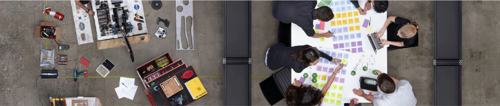

Bienvenue chez frog
Imaginer les expériences uniques qui transformeront votre business.
Chez frog, notre métier est de concevoir, d’élaborer et de mettre en œuvre les stratégies, modèles, produits, services et expériences sur lesquels reposera votre croissance.
Nos équipes pluridisciplinaires, composées d’experts business, marque, data, design ou technologie, vous accompagnent à toutes les étapes.
Ensemble, nous contribuons à réinventer votre activité ou votre marque, à amplifier les expériences, engager vos audiences et à redéfinir vos outils et méthodes de travail.
Nos compétences s’organisent en 5 domaines clés, combinables en fonction des projets :
BUSINESS
La prospérité durable s’appuie sur une stratégie business agile qui amène à repenser son positionnement, sa proposition de valeur et son offre. En d’autres termes, sortir des schémas du passé pour inventer son propre modèle.
Grâce à une approche combinant création, technologie, data et stratégie, nous identifions avec vous de nouvelles opportunités de croissance et des leviers de transformation durable pour votre entreprise via des pistes audacieuses de développement. Nous vous accompagnons tout au long de ce processus, de la définition de nouveaux business models et la diversification de vos activités, jusqu’à la création de produits et services innovants et à leur lancement sur le marché.
BRAND
Chaque marque raconte sa propre histoire, porteuse de promesse, de singularité, de sens et d’émotion. Cette histoire, la vôtre, doit entrer en résonance avec les aspirations de vos clients et les enjeux du monde actuel.
Nous élaborons des stratégies de marque et de communication uniques, ainsi que des contenus impactants, qui se déploient à la fois sur le long terme et en temps réel. Ainsi, votre image retrouve une parfaite cohérence avec les attentes de votre cible, vos valeurs, votre raison d’être et vos objectifs business. Nous faisons de votre marque un puissant levier au service de votre transformation et de votre performance.
EXPÉRIENCE
En renforçant la confiance du client, en approfondissant sa connexion émotionnelle avec la marque et en traduisant en actes la promesse, l’expérience proposée est un levier décisif de création de valeur… À condition d’être pertinente et sans défaut.
En nous basant sur notre connaissance des tendances, la compréhension approfondie de vos clients, de leurs besoins et de leurs attentes, nous imaginons des services pertinents et fluides, des expériences sans couture, engageantes et mémorables, et ce quels que soient le contexte, le point de contact et le stade de la relation. Nous associons nos expertises en design, en technologie et en data science pour élaborer des scénarios et des interactions dont la fluidité, l’immédiateté et l’originalité laisseront pour longtemps à vos clients une impression positive.
ACTIVATION
Pour obtenir du consommateur qu’il passe de l’attention à l’action, les marques déploient des stratégies d’activation et de fidélisation de plus en plus sophistiquées. L’enjeu : vous différencier pour maximiser votre efficacité.
Nous développons un marketing d’expérience personnalisé qui se déploie en temps réel sur chacun des points de contact du parcours de vos clients. Grâce à nos expertises conjuguées en matière de contenus, de données, d’algorithmes des plateformes et de technologies marketing, nous concevons et mettons en œuvre des campagnes d’acquisition et des programmes de fidélisation agiles et innovants qui favoriseront l’adhésion de vos clients et leur engagement durable avec votre marque.

OPERATIONS
Pour mettre en œuvre efficacement les expériences client qu’elles imaginent, les équipes doivent disposer des processus, de l’organisation et des outils appropriés. Différenciez-vous par votre excellence opérationnelle.
Nous vous accompagnons dans la transformation de votre organisation en plaçant le client final au centre. Nous vous aidons à imaginer la stratégie adéquate et bâtir le modèle opérationnel sur-mesure afin de développer, maîtriser et exploiter la connaissance client au sein de vos entités marketing, vente et service. Notre propre démarche centrée sur le client ainsi que nos expertises en matière de data, de design et de technologie vous permettent de relever les défis de la collaboration et du décloisonnement, clés d’une expérience client irréprochable.